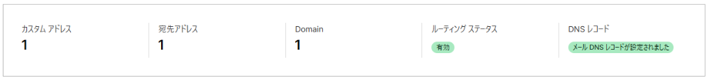
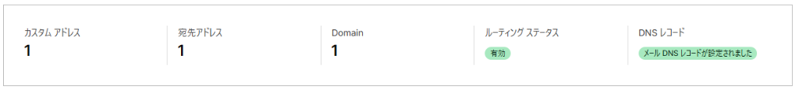
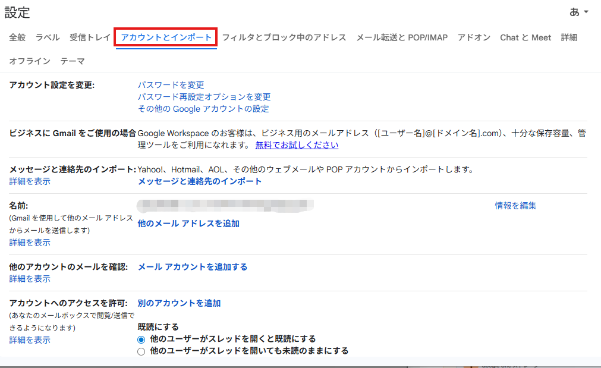
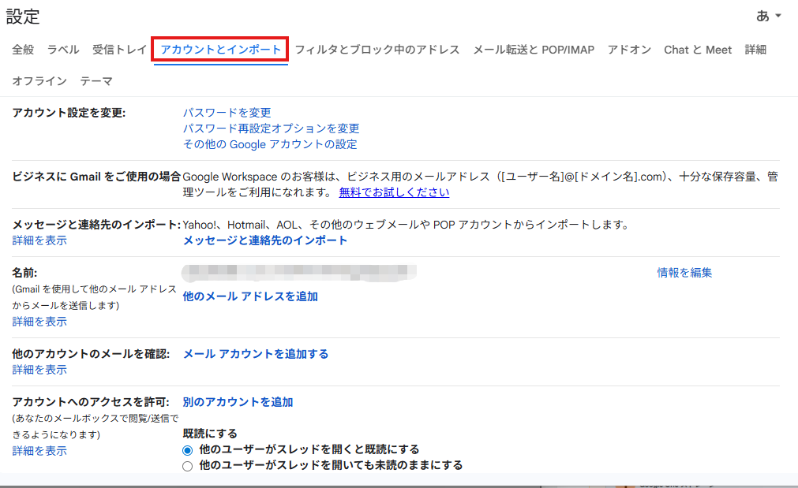

0円で独自ドメインメールを作る
Cloudflareの「Email Routing（メール転送）」機能を使えば、サーバー代を払わずにinfo@web-tsukuru.jpのような独自ドメインのメールアドレスを持つことができます。
届いたメールは、普段使っているGmailなどに自動転送されます。
💡 この設定でできること
・独自ドメイン宛のメール（例: contact@web-tsukuru.jp）を、無料で作れる。
・届いたメールは、指定したGmail等で受信できる。
（※ここでの設定は「受信（転送）」専用です）
・独自ドメイン宛のメール（例: contact@web-tsukuru.jp）を、無料で作れる。
・届いたメールは、指定したGmail等で受信できる。
（※ここでの設定は「受信（転送）」専用です）
STEP 1: メール設定画面を開く
1 Cloudflareの左メニューから「メール アドレス」をクリック

2 メニューの中から「Email Routing」を選択

3 画面中央の青いボタン「始める」（または Get started）をクリック

2 メニューの中から「Email Routing」を選択
3 画面中央の青いボタン「始める」（または Get started）をクリック
STEP 2: 転送用アドレスを作成
3 カスタムアドレス：作りたいメールアドレスを入力（例：info）
4 宛先：転送先の自分のメールアドレスを入力（例：atsumiwebstudio@gmail.com）

5 「作成して続行する」をクリック
4 宛先：転送先の自分のメールアドレスを入力（例：atsumiwebstudio@gmail.com）
5 「作成して続行する」をクリック
STEP 3: 宛先アドレスの確認
6 Gmailに届いた確認メール内のボタンを押すと、Cloudflareの画面が「確認済み」に変わります。

7 「続行」をクリック
7 「続行」をクリック
STEP 4: レコードの追加
8 次の画面で「競合するレコード」や「必要なレコード」が表示されます。

9 画面下の青いボタン「レコードを追加して有効にする」をクリック

邪魔なレコードが消えるとボタンが青くなります。
「レコードを追加して有効にする」をクリックしてください。
以下のように「有効（Enabled）」かつ「メール DNS レコード設定されました」（緑色の表示）になれば、全ての設定完了です！🎉

これで、
9 画面下の青いボタン「レコードを追加して有効にする」をクリック
⚠️ ボタンが押せない場合
上にある「競合するレコード」の横に赤い文字で「削除（Delete）」と書かれていませんか？
もしあれば、先にその「削除」を押して不要なレコードを消してください。

確認画面が出たら、迷わず「削除」（赤いボタン）を押してOKです。
上にある「競合するレコード」の横に赤い文字で「削除（Delete）」と書かれていませんか？
もしあれば、先にその「削除」を押して不要なレコードを消してください。
確認画面が出たら、迷わず「削除」（赤いボタン）を押してOKです。
邪魔なレコードが消えるとボタンが青くなります。
「レコードを追加して有効にする」をクリックしてください。
以下のように「有効（Enabled）」かつ「メール DNS レコード設定されました」（緑色の表示）になれば、全ての設定完了です！🎉

これで、
info@web-tsukuru.jp 宛のメールがご自身のGmailに届くようになりました！
【発展編】送信もできるようにする
受信したメールに返信する際、相手に info@web-tsukuru.jp から送ったように見せる設定です。
これにはGoogleアカウントの「アプリパスワード」という特別なパスワードを使います。
STEP 5: Googleアプリパスワードの発行
1 Googleアカウント（myaccount.google.com）にアクセス
2 左メニュー「セキュリティ」をクリック

3 リストの一番上にある「2段階認証プロセス」をクリック
3 画面の一番上にある「検索窓」を使います。（これが一番早いです！）
4 「アプリ」と入力して、出てきた候補の「アプリ パスワード」をクリック

5 アプリ名に適当な名前（例：Cloudflare）を入力して「作成」
6 16桁のパスワードが表示されるので、コピーしてメモ帳などに控える
6 16桁のパスワードが表示されるので、コピーしてメモ帳などに控える


2 左メニュー「セキュリティ」をクリック
3 リストの一番上にある「2段階認証プロセス」をクリック
3 画面の一番上にある「検索窓」を使います。（これが一番早いです！）
4 「アプリ」と入力して、出てきた候補の「アプリ パスワード」をクリック
5 アプリ名に適当な名前（例：Cloudflare）を入力して「作成」
6 16桁のパスワードが表示されるので、コピーしてメモ帳などに控える
6 16桁のパスワードが表示されるので、コピーしてメモ帳などに控える
⚠️ このパスワードは後で1回だけ使います。画面を閉じると二度と見れないので必ずコピーしてください！
STEP 6: Gmailで送信設定を追加
6 Gmailの右上「歯車マーク」→「すべての設定を表示」

7 「アカウントとインポート」タブをクリック

8 「名前:」のところにある「他のメールアドレスを追加」をクリック

【開いた画面での入力内容】

7 「アカウントとインポート」タブをクリック

8 「名前:」のところにある「他のメールアドレスを追加」をクリック
【開いた画面での入力内容】
- 名前：相手に表示したい名前（例：Webをつくるしごと）
- メールアドレス：
info@web-tsukuru.jp - 「エイリアスとして扱います」：チェックを入れたまま
- →「次のステップ」をクリック
STEP 7: SMTPサーバーの設定（重要）
ここが一番の難関です。
下の画像のように、最初から route2... や info が入力されていますが、これらは使いません！
▲これはダメな例（全部消してください）
これらを全て消して、以下のように書き換えてください（これが正解です👇）。
- SMTPサーバー：
smtp.gmail.com - ポート：
587 - ユーザー名：
atsumiwebstudio@gmail.com
※info〜ではありません！元のGmailアドレスです - パスワード：さっきコピーした「16桁のアプリパスワード」
（※スペースが入ったままで大丈夫です！） - TLSを使用した...：チェック（推奨）
STEP 8: 確認コードの入力
9 以下のようなメールがGmailに届けば成功です！（受信ができている証拠です）

10 メール内の長いリンクをクリックして、出てきた画面で「確認」ボタンを押す
11 以下の画面が出れば完了です！

これですべての設定が完了です！お疲れ様でした！🎉
メール作成時に「差出人」を
（※反映まで少し時間がかかる場合がありますが、一度Gmailを再読み込みすると出てきます）
10 メール内の長いリンクをクリックして、出てきた画面で「確認」ボタンを押す
11 以下の画面が出れば完了です！
これですべての設定が完了です！お疲れ様でした！🎉
メール作成時に「差出人」を
info@web-tsukuru.jp に切り替えられるようになっています。（※反映まで少し時間がかかる場合がありますが、一度Gmailを再読み込みすると出てきます）
STEP 9: 【使い方】送信元の切り替え
メールを送るときは、以下の手順で差出人を切り替えます。
- Gmailの「作成（＋）」ボタンを押す
- 「差出人（From）」のところにある自分のメールアドレスをクリック
- リストから
info@web-tsukuru.jpを選択

これで、相手には「info@...」からのメールとして届きます！